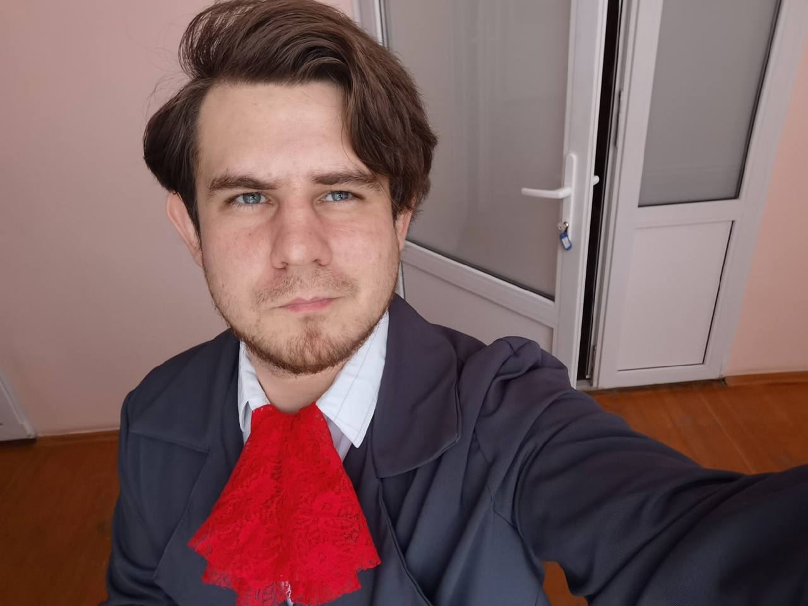
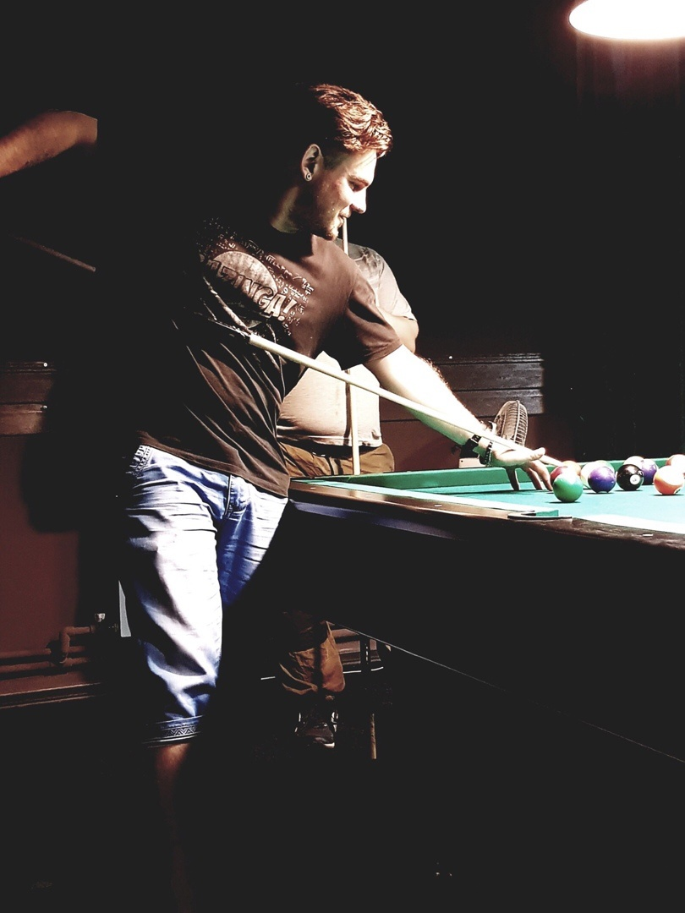
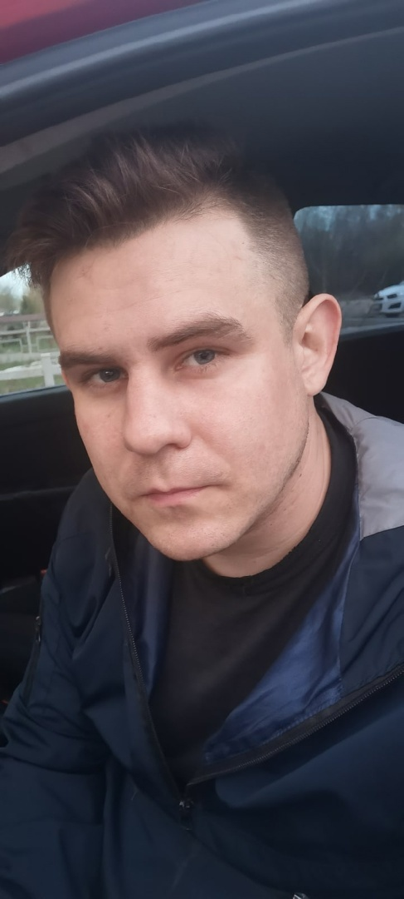

Выпускники 2017 года
Знакомьтесь: Слыжов Денис выпускник 2017 года.
✍🏻Денис учился в группе специальности Программирование в компьютерных системах (квалификация: техник-программист). Это единственный выпуск по данной специальности в колледже.
✍🏻 За годы учебы неоднократно участвовал в чемпионате "Карьера в России", в том числе с очным участием в Москве.
✍🏻 Был руководителем проекта по созданию нашей группы НЭТК Информационные системы & Программирование в социальных сетях.
✍🏻 Получал стипендию министерства образования
❗Денис имеет диплом только нашего колледжа.
❗С августа 2017 по март 2018г работал в эльдорадо, должность: специалист сервисной ячейки.
❗С 18 марта 2018 г. и по настоящее время. Работает на судостроительной верфи г. Навашино, должность: инженер-программист.
Занимается в организации:
✍🏻 Написанием программ для автоматизации рабочего процесса технического отдела предприятия.
✍🏻Ответственный за казначейство предприятия, настраивает, поддерживает работоспособность клиент-банков предприятия, также за ЭЦП финансового отдела и высшего руководства.
✍🏻 Протяжкой оптоволоконных кабелей на территории завода. Установка, настройка и поддержка серверов на предприятии, а также установка и настройка серверов на судах, поддержка и обслуживание систем безопасности предприятия.
✍🏻Разработчик и администратор СЭД Directum.
✍🏻Фото и видео съемкой. Пилот коптера. Разработка дизайна имиджевых мероприятий предприятия.
❗И еще есть хобби: Занимается разметкой в ин тайм дата. Обучение искусственного интеллекта. P.S.: Да и скалолазание, конечно!!!!


